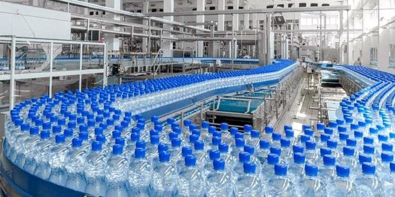
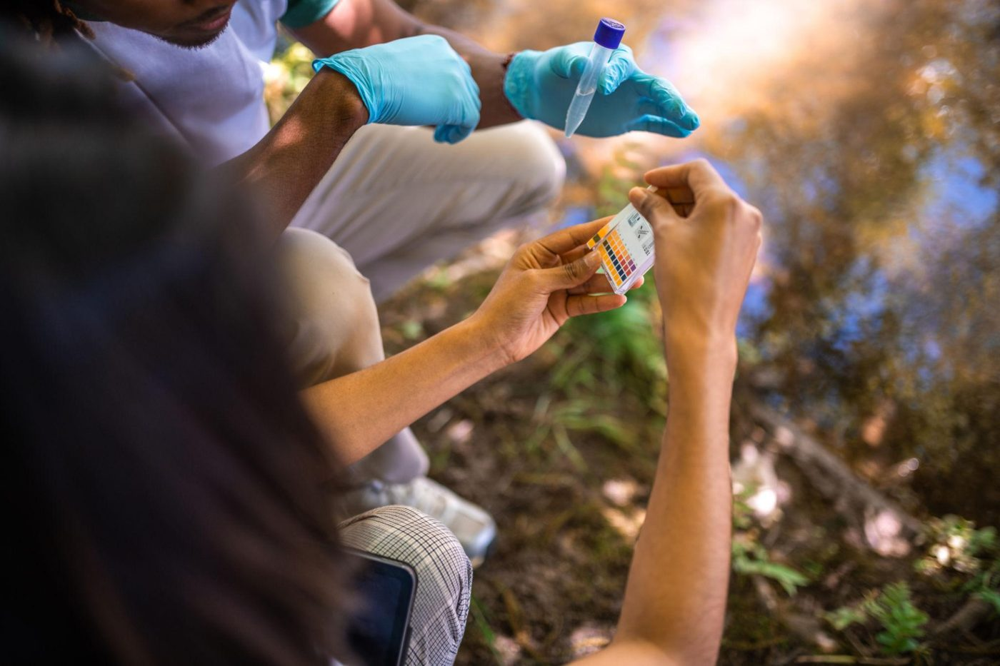

Six étapes maîtrisées, contrôlées en continu, pour garantir une eau pure et sûre à chaque bouteille.
L'eau est captée à la source, préservée de toute pollution, dans le respect de son équilibre naturel.
Une filtration fine élimine les impuretés tout en conservant la légèreté de l'eau.
Traitement par osmose inverse et stérilisation UV pour une pureté microbiologique optimale.
Des analyses en laboratoire vérifient chaque paramètre, à chaque étape de la production.
Embouteillage automatisé sous conditions d'hygiène strictes, à l'abri de toute contamination.
NAFI est livrée dans tout Conakry, jusqu'aux commerces, familles et professionnels.


Une eau captée dans un environnement préservé, analysée et contrôlée à chaque étape — de la source à la bouteille.
La confiance se construit à chaque contrôle. Voici nos engagements de qualité.
Normes sanitaires guinéennes respectées
Contrôle laboratoire régulier
Eau potable certifiée
Hygiène stricte à chaque étape